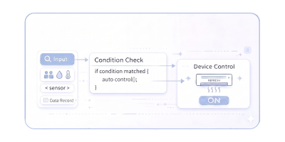

即時狀態掌握
隨時查看空間中的人流、溫濕度與設備狀態，不必逐一巡查， 也能快速掌握現場情況。

ROOMMATIC 不只是單純控制設備，而是整合人流、溫濕度、設備狀態與管理介面， 讓空間資訊可以被即時看見、有效判斷，並依照預設條件做出更合適的調整。
即時收集人流、溫濕度與設備資訊。
根據設定邏輯調整燈光、冷氣等設備。
把狀態、紀錄與使用資訊整合在同一介面。
How It Works
蒐集人流、溫濕度與設備狀態，建立空間即時資訊。
依據感測資料與設定條件，自動決定是否調整燈光、冷氣等設備。
將空間狀態、設備紀錄與使用資訊集中呈現，方便後續查看與管理。
Core Features
隨時查看空間中的人流、溫濕度與設備狀態，不必逐一巡查， 也能快速掌握現場情況。
可依據空間使用情況與預設條件，自動調整照明、空調等設備， 讓控制不再只是手動操作。

使用紀錄與空間狀態可統一整理，方便後續查詢、比對與管理， 減少資訊分散造成的負擔。